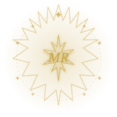

Era 01
The Silent Era
When I disappeared to rebuild. The world didn't notice. I did. Silence became the loudest thing I ever chose.
2022 — 2023
A personal journey
I was sunshine. I chose midnight rain.
"Some of us weren't meant to stay in the light forever.— on becoming
Some of us bloom in the dark."
The Journey
Era 01
When I disappeared to rebuild. The world didn't notice. I did. Silence became the loudest thing I ever chose.
2022 — 2023Era 02
Discipline. JEE. No excuses. Every hour counted. Every page mattered. I became someone I could be proud of.
2023 — 2024Era 03
I stopped shrinking. I started choosing. This is not an ending — it's an arrival. The story starts now.
2024 — nowUnfiltered
For the longest time I made myself small — smaller thoughts, smaller dreams, smaller voice. Today I turned that off. I opened a blank page and wrote something true.
The audience was always imaginary anyway. I wrote for me tonight. No performance. Just presence. That's enough.
It just falls. It doesn't ask if it's too much, too loud, too cold. I want to be more like that — showing up fully, without asking permission first.
Now Playing
Midnight Rain